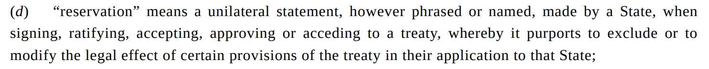

Section 2: How effective have international institutions been in reducing the use of torture by governments around the world?
The Convention Against Torture (CAT)
Part 3
Justin Leinaweaver (Fall 2026)
The Convention Against Torture (CAT) (1984)
Legalization
Obligation
Precision
Delegation (dispute resolution)
Delegation (rule making / implementation)
KLS Design Mechanisms
Membership rules
Scope of issues
Centralization of tasks
Rules for control
Flexibility of arrangements
The Convention Against Torture (CAT) (1984)
Legalization
Obligation
Precision
Delegation (dispute resolution)
Delegation (rule making / implementation)
KLS Design Mechanisms
Membership rules
Scope of issues
Centralization of tasks
Rules for control
Flexibility of arrangements
Vienna Convention on the Law of Treaties (1969)

Art 19: Formulation of reservations
Art 20: Acceptance of and objection to reservations
Art 21: Legal effects of reservations and of objections to reservations
Art 22: Withdrawal of reservations and of objections to reservations
The Convention Against Torture (CAT) (1984)
Article 28
Article 29
Article 30
The Convention Against Torture (CAT) (1984)
Legalization
Obligation
Precision
Delegation (dispute resolution)
Delegation (rule making / implementation)
KLS Design Mechanisms
Membership rules
Scope of issues
Centralization of tasks
Rules for control
Flexibility of arrangements
The Convention Against Torture (CAT) (1984)
Questions of Effectiveness
What specific “things” could we identify in the world to see if the CAT is working as designed?
What are the most likely obstacles to implementing the CAT?
Bottom line, do we expect the CAT to reduce torture levels in the world?
Bivariate Analyses of CAT Effectiveness
How fast was the CAT ratified?
Does the CIRIGHTS data show CAT ratifiers reduced torture?
Does the V-Dem data show CAT ratifiers reduced torture?